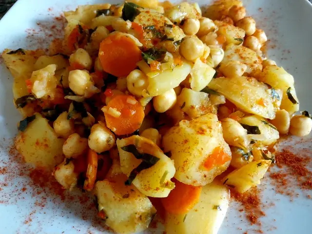
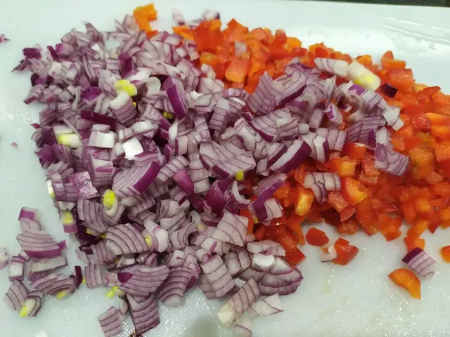

Arroz con leche
Este postre clásico tiene leche, arroz y canela, perfecto para la sobremesa.
Postre tradicional con canela y leche.

Rellenos de carne con salsa casera.

Salsa espesa con fideos y pollo.
Este postre clásico tiene leche, arroz y canela, perfecto para la sobremesa.
Rellenos de carne, cubiertos con salsa blanca y tomate.
Un clásico guiso de arroz con carne y verduras para días fríos.